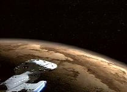
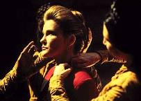
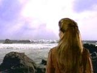
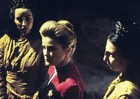
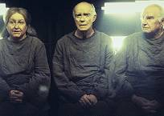
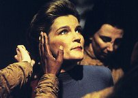
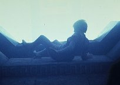
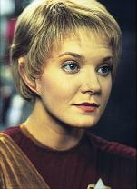

|
MANCHETE
DO EPISÓDIO
As crenças de Janeway são desafiadas
pelo misticismo local de alienígenas
Episódio
anterior | Próximo
episódio
Sinopse:
Data
Estelar: 50063.2
 Enquanto
a Voyager visita o planeta Nechani, Kes se aventura em um santuário
da Ordem Nechisti e é atingida por um misterioso raio de energia,
que a deixa em coma. Quando é transportada de volta à nave, o
Doutor não consegue fazer nada para ajudá-la, pois não consegue
compreender a condição dela. O magistrado local diz a Janeway que
Kes violou um local sagrado em que apenas os monges podem entrar --
e somente após terem passado por ritual de purificação que os
protege do campo de energia. Mais tarde, Neelix descobre a antiga
história de um rei que passou pelo ritual para salvar a vida do
filho. A capitã pede permissão para fazer o mesmo.
 O
Conselho Nechisti aprova a petição de Janeway e o Doutor implanta
uma bio-sonda sob a pele dela para monitorar sua condição física
durante o ritual. Uma guia encontra a capitã no santuário e a leva
para uma sala onde três pessoas idosas afirmam estar também
esperando para o início do ritual, e que estão lá desde que
conseguem se lembrar.
 Com
a vida de Kes em questão, Janeway impacientemente pede que o ritual
comece. A guia entrega a ela uma pedra e pergunta o que enxerga.
Janeway diz que vê uma pedra, motivo pelo qual lhe é pedido que
continue observando. A guia a conduz por uma série de desafios e,
horas depois, pede a uma capitã exausta que coloque a mão dentro
de um cesto, em que uma criatura chamada "nesset" a pica.
Janeway cai, e a guia a coloca em uma câmara subterrânea.
 Na
Voyager, o Doutor detecta as toxinas da picada pela corrente sangüínea
de Janeway, teorizando que isso pode ser a chave para salvar Kes. Em
uma visão, a capitã pede aos espíritos que restaurem a saúde da
tripulante, e a guia diz a ela que já tem o que precisa para salvá-la.
O ritual termina. Janeway retorna à Voyager, onde o Doutor prepara
uma cura para as toxinas no sangue dela. Mas quando ele aplica o
medicamento em Kes, sua situação só piora. Frustrada, Janeway
confronta a guia, que a manda de volta à sala de espera.
 Os
membros do Conselho — as pessoas idosas que Janeway havia
encontrado — a criticam por não ter fé nos espíritos apenas
porque não consegue sondá-los com sua tecnologia. A capitã então
percebe que para salvar Kes, ela deve acreditar pelo menos em sua própria
fé. Sua única opção é levar Kes de volta ao campo de energia,
mesmo que os sensores o identifiquem como sendo mortal. Ignorando os
conselhos de Chakotay e Neelix, Janeway a carrega para o santuário,
e desta vez — não se sabe se por causa da bioquímica alterada em
seu corpo ou pela nova fé irracional — o campo não as machuca,
regenerando Kes.
Comentários:
 Pouco
convencional. É talvez a descrição mais adequada a "Sacred
Ground". Pode ser que a história não seja tão estranha a
Jornada, pois trata de uma questão controversa
insistentemente abordada nas séries: a religião. Mas com certeza
ela o é a Voyager.
Foram poucas as vezes em que a capitã
deixou vir à tona sua humanidade. Mas aqui não se tem apenas o
extravasamento de um sentimento, de uma emoção. As crenças mais
profundas e [até então] inquestionáveis de Janeway são
contestadas. Desde "Tattoo",
da segunda temporada, sabia-se que a personagem era um tanto cética
e seu agnosticismo era evidente. Mas até aqui não tinha ficado
muito claro para o telespectador em que a capitã de fato
acreditava, com relação à religiosidade.
 Como
cientista, Kathryn Janeway só crê naquilo que consegue ver - ou,
no caso, scannear com um tricorder. Ela tem dificuldade em aceitar
determinados ritos e manifestações, embora, como oficial da Frota,
respeite as culturas locais. Mas a experiência em Nechani altera
sua percepção do universo. Esse episódio prova que, por mais
tecnologicamente evoluída que a raça humana venha a se tornar, a fé
no que é mistério sempre fará parte de sua natureza. A capitã
percebe isso já no início do roteiro, mas permanece inflexível e
relutante até não poder mais.
É o questionamento sobre até onde fé
e ciência convivem em harmonia. É irônico que exista uma
pluralidade tão grande de crenças religiosas em Jornada,
culturas inteiramente voltadas à fé --como é o caso dos
Bajorianos--, mas que nada seja dito a respeito dos humanos. Os
produtores devem considerar esse um ponto "controverso
demais". Talvez esta seja a linha que delimite até onde a saga
criada por Gene Roddenberry pode ir.
A história em questão foi bem
trabalhada. Como Jeri Taylor ressaltou, foi um episódio que os fãs
devem ter amado ou odiado. Mas uma coisa é certa: foi um roteiro
coerente. Em momento algum houve contradições, e isso é o que o
torna tão especial para Jornada, e para Voyager.
 A
trama girou sobre Janeway. Chakotay, Neelix e os outros apenas
ajudaram na construção. Mas é importante prestar atenção no
papel que Kes exerce. Não poderia ter existido maior prova de afeto
e preocupação para com a Ocampa. Isso foi ignorado anos mais tarde
pela produção, quando, em "Fury", do sexto ano,
Kes tenta destruir a Voyager e matar a todos por "a terem
deixado ir embora da nave, quando não estava preparada". De
certa forma, "Fury" destrói os três anos em que o
público teve empatia com a personagem. Mas isso já é assunto para
outra ocasião...
Citações:
Magistrado - "Captain, you
seem to want answers for everything. I don't have them."
("Capitã, a senhora parece querer respostas para tudo. Eu
não as tenho.")
Janeway - "The captain of a
starship is fully responsible for every member of her crew."
("A capitã de uma nave é completamente responsável por
cada membro de sua tripulação.")
Janeway - "But I imagine if
we scratch deep enough, we'd find a scientific basis for most
religious doctrines."
("Mas eu acredito que se pesquisássemos mais a fundo,
encontraríamos uma base científica para a maioria das doutrinas
religiosas.")
Guia - "You are fond of your
little devices, aren't you?"
("Você se orgulha de seus aparelhinhos, não é?")
Janeway - "They've always served me well."
("Eles sempre me serviram bem.")
Guia - "I'm sure they have."
("Tenho certeza que sim.")
Homem idoso - "If you can
explain everything, what's left to be believed in?"
("Se você puder explicar tudo, o que sobra para ser
acreditado?")
Janeway - "It's a perfectly
sound explanation, Doctor. Very... scientific."
("É uma explicação perfeitamente lógica, Doutor.
Bastante... científica.")
Trivia:
 Lisa Klink, a roteirista desse episódio, também roteirizou "Remember".
Lisa Klink, a roteirista desse episódio, também roteirizou "Remember".
Esse é o primeiro dos quatro episódios que Robert Duncan McNeill,
o Tom Paris, dirige na série.
Aqui fica estabelecido que a capitã não sabe desenhar e tem uma
irmã que é artista.
Jeri Taylor, produtora de Voyager, disse: "Eu assisti ao
'Sacred Ground' na semana passada, quando foi reprisado e
amei. Eu acho que é o que Jornada deveria ser. Era
provocador e profundo, passava uma mensagem e trabalhou coisas
inesperadas. Acho que realmente funcionou. Não acho que seja o tipo
de episódio a que toda a audiência responda, porque é muito
introspectivo. Foi um episódio para se pensar, mas havia espaço
para uma mistura. A mistura é aquilo por que anseio, dar a todos um
pouco daquilo de que gostam, e não fazer só um tipo de história."
.
Ficha
técnica:
Direção de Robert Duncan McNeill
História de Geo Cameron
Roteiro de Lisa Klink
Exibido em 30/10/1996
Produção: 043
Elenco:
Kate Mulgrew como
Kathryn Janeway
Robert Beltran como Chakotay
Roxann Biggs-Dawson como B'Elanna Torres
Robert Duncan McNeill como Tom Paris
Jennifer Lien como Kes
Ethan Phillips como Neelix
Robert Picardo como Doutor
Tim Russ como Tuvok
Garrett Wang como Harry Kim
Elenco convidado:
Becky Ann Baker como Guia
Estelle Harris como mulher idosa
Keene Curtis como momem idoso 2
Parley Baer como homem idoso 1
Henry Groener como Magistrado
Episódio
anterior | Próximo
episódio
|